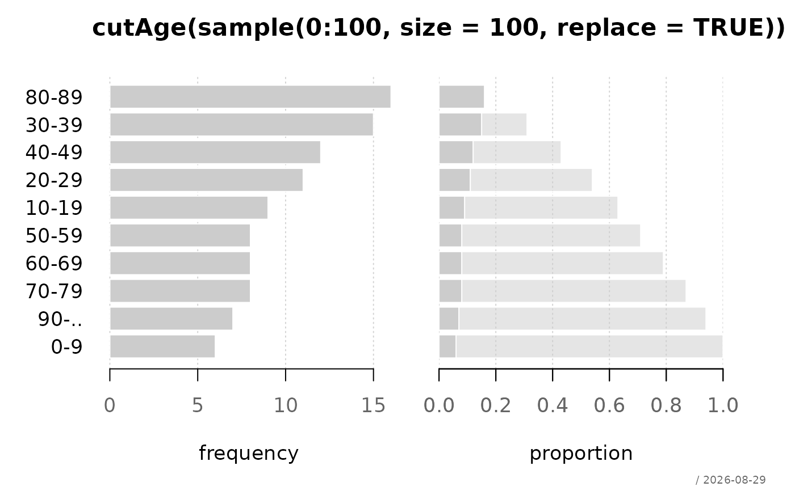

Dividing the range of an age variable x into intervals is a frequent
task in data analysis. The commonly used function cut has
unfavourable default values for this. cutAge() is a convenient
wrapper for cutting age variables in groups of e.g. 10 years with more
suitable defaults.
Arguments
- x
continuous variable
- breaks
either a numeric vector of two or more unique cut points or a single number (greater than or equal to 2) giving the number of intervals into which x is to be cut. Default is 10-year intervals from 0 to 90.
- right
logical, indicating if the intervals should be closed on the right (and open on the left) or vice versa. Default is
FALSE- unlike incut!- ordered_result
logical: should the result be an ordered factor? Default is
TRUE- unlike incut!- full
logical; whether to retain empty levels at the edges of the distribution
- labels
labels for the levels. When set to
TRUEthe age ranges will be 00-09, 10-19, 20-29, etc.- ...
further arguments passed to
cut(), for example to change the labels
Value
a factor, or an integer vector of level codes when
labels = FALSE
Values which fall outside the range of breaks are coded as NA, as are
NaN and NA values.
See also
Other cut:
cut.integer(),
cutQ()
Examples
set.seed(1)
desc(cutAge(sample(0:100, size = 100, replace = TRUE)))
#> ──────────────────────────────────────────────────────────────────────────────
#> cutAge(sample(0:100, size = 100, replace = TRUE)) (ordered, factor)
#>
#> length n NAs unique levels dupes
#> 100 100 0 10 10 y
#> 100.0% 0.0%
#>
#> level freq perc cumfreq cumperc
#> 1 0-9 6 6.0% 6 6.0%
#> 2 10-19 9 9.0% 15 15.0%
#> 3 20-29 11 11.0% 26 26.0%
#> 4 30-39 15 15.0% 41 41.0%
#> 5 40-49 12 12.0% 53 53.0%
#> 6 50-59 8 8.0% 61 61.0%
#> 7 60-69 8 8.0% 69 69.0%
#> 8 70-79 8 8.0% 77 77.0%
#> 9 80-89 16 16.0% 93 93.0%
#> 10 90-.. 7 7.0% 100 100.0%
#>

# readable labels
table(cutAge(c(3, 17, 42, 67, 95), labels = TRUE))
#>
#> 00-09 10-19 20-29 30-39 40-49 50-59 60-69 70-79 80-89 90-..
#> 1 1 0 0 1 0 1 0 0 1
# drop the empty groups at both ends
table(cutAge(c(42, 47, 51), labels = TRUE, full = FALSE))
#>
#> 40-49 50-59
#> 2 1